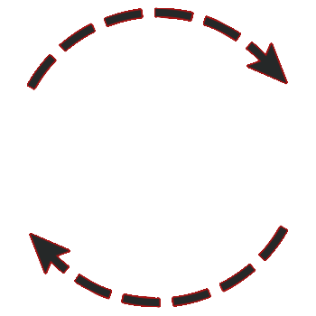

Mechanical Engineer
- Vývoj mechanických zařízení
- Prototypová konstrukce
- 3D Tisk

WEB Developer
- Tvorba webových stránek
- Tvorba asynchronních aplikací
Přestože jsem vystudovaný strojní inženýr se specializací na stavbu strojních zařízení, jsem velký nadšenec pro tvorbu webových aplikací.
Již při výběru střední školy jsem váhal, zda-li se vydám směrem strojařiny nebo IT. Mezi mé záliby patřil jednak vývoj módů do her, ale také výroba funkčních 3D modelů. Nakonec zvítězila cesta 3D modelování a po střední škole jsem pokračoval na vysokou. Během svého studia jsem se snažil získat drahocennou praxi, kterou po škole využiji. Již po několika letech praxe jsem však zjistil, že práce konstruktéra je skvělá a zábavná práce, ale není patřičně ohodnocena. To mě přimělo k myšlence vrátit se zpět do minulosti, kdy jsem se rozhodoval kterým směrem se vydám. Jelikož jsem měl nějaké základy tvorby webových stránek již ze střední školy a pojmy jako "cyklus" či "konstruktor" mi byly známé, začal jsem prohlubovat své znalosti studiem ve volném čase. Zadarmo jsem vytvářel webové stránky pro známé a pracoval na svých projektech.
Níže je možné vidět ukázku z mých konstrukčních projektů. Realizované výrobky byly vytvořeny jako nekomerční prototypy 3D tiskem, nebo přesným litím do skořepinové formy.
Konstrukční verze v1
Mezi moje projekty s fyzickou realizací patří například peristaltické čerpadlo pro dopravu tekutin bez kontaminace. Rám je opatřen chladícími žebry pro odvod tepla.
Bezlopatkový ventilátor
Inspiraci pro výrobu vlastního bezlopatkového ventilátoru jsem našel u společnosti Dyson. Celý ventilátor je vyroben pomocí 3D tisku.
Veškerý svůj volný čas věnuji studiu webových technologií, vývoji webových stránek a aplikací. Níže se nachází ukázky z mé tvorby. Aktuálně zlepšuji své nedostatky v JS a podrobněji studuji framework Vue.js.
Webové stránky
Tvorba webových stránek s jednoduchým designem na přání zákazníka. Na obrázku je zobrazena úvodní stránka a podstránka. Vývojem této webové stránky jsem si prohloubil znalosti nejen HTML a CSS, ale taky znalosti JavaScriptu, ve kterém jsou napsány klíčové funkce.
CANVAS game
Velmi jednoduchá hra vytvořená pomocí technologie CANVAS. Aplikace umožňuje spouštět závod dvou vozidel, kdy rychlost vozidel je náhodně generovaná veličina. Na této jednoduché hře jsem si osvojil základní práci s 2D plátnem.